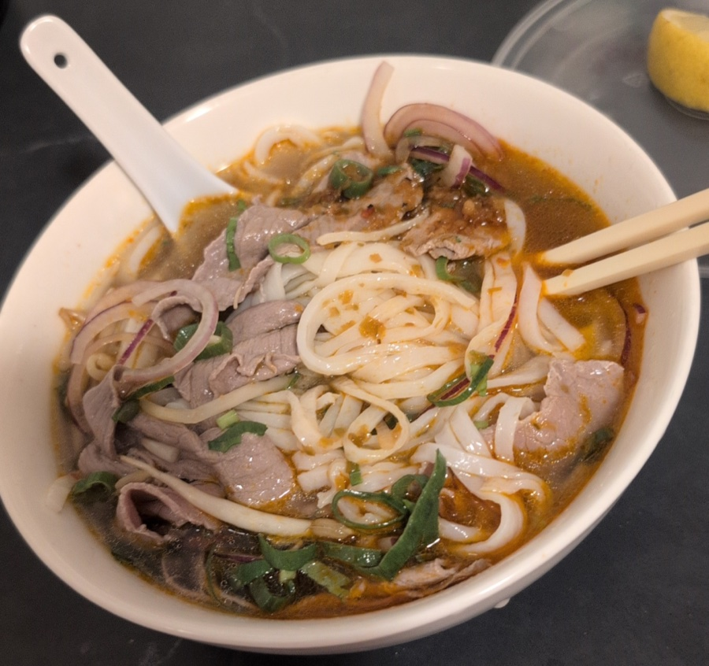

📱 WhatsApp

Spicy beef pho from Roll'd
12:41 ✓✓
Logged: Roll'd sliced rare
beef pho, 487 kcal. 1,427
kcal today.
12:41
📄 daily/2026-07-14.md
---
date: 2026-07-14 04:00
calories_consumed: 1427
---
## Macros
| Meal | kcal | P |
|------------|------|-------|
| Porridge | 420 | 14g |
| Chicken | 520 | 48g |
| Roll'd pho | 487 | 19.2g |
...
📄 health/calorie-log.md
| Date | kcal | Protein |
|------------|------|---------|
| 2026-07-09 | 2374 | 201.5g |
| 2026-07-10 | 3004 | 194.8g |
| 2026-07-11 | 2417 | 162g |
...one row per day...
📄 health/common-foods.md
## Roll'd Sliced Rare Beef Pho
1 bowl (738g)
- 487 kcal
- 19.2g protein
- 78.2g carbs
- 10.3g fat
official nutrition
4am cron
rolls up totals
checks known
macros first
logs the meal